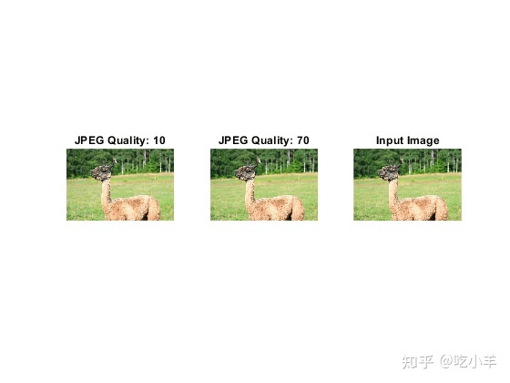
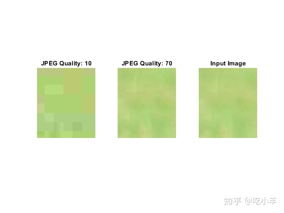
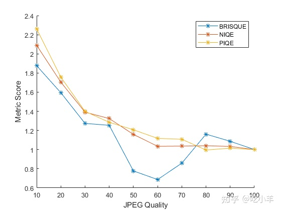
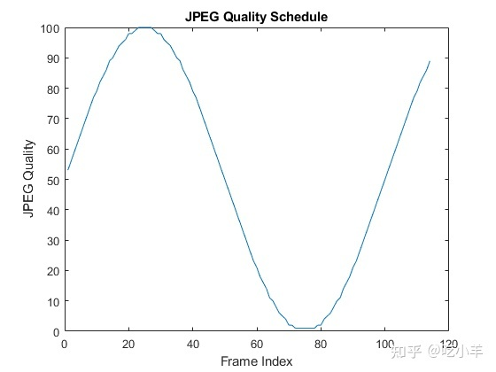
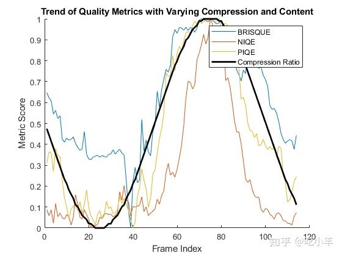

Home
本示例展示了如何比较各种无参考图像质量指标的性能。
评估图像质量是图像采集、压缩和其他图像增强工作流程的重要组成部分。希望有一个快速、自动化的度量标准，它能够精密模仿图像质量的主观测量。此示例比较了三个无参考质量指标的性能。
BRISQUE - 盲/无参考图像空间质量评估器
NIQE - 自然度图像质量评估器
PIQE - 基于感知的图像质量评估器
根据数据集中的图像，每个指标都有不同的优势。要为您的数据选择最佳指标，您可以比较三个指标在示例图像数据上的性能。此示例展示了如何比较两种不同情况下的性能：单个图像和视频流上不同级别的 JPEG 压缩。
评估对单个图像不同压缩的响应
图像压缩是视觉质量与压缩率或输出数据大小之间的权衡。权衡还取决于图像内容。例如，与具有详细特征的图像相比，具有均匀区域的图像可以压缩为更小的文件大小并显示出更少的伪影。图像质量指标可以帮助分析这种权衡，同时尽量减少图像内容对分析的影响。
将图像读入工作区。
im = imread('llama.jpg');
用不同的 JPG 压缩比写入图像的副本。将每个压缩图像读回工作区。
jpegQuality = 10:10:100;
numObservations = numel(jpegQuality);
compressedFrames = cell(1,numObservations);
for ind = 1:numObservations
q = jpegQuality(ind);
tempFile = ['llama_compression_',num2str(q),'.jpg'];
imwrite(im,tempFile,'Quality',q);
compressedFrames{ind} = imread(tempFile);
end
检查压缩图像。
tiledlayout(1,3);
h1 = nexttile;
imshow(compressedFrames{1})
title('JPEG Quality: 10')
nexttile
imshow(compressedFrames{7})
title('JPEG Quality: 70')
nexttile
imshow(im)
title('Input Image')
linkaxes

放大压缩图像以查看某些特定伪像的性质。在 JPEG 质量 10 时，块状伪影很明显。
h1.XLim = [650 700]; h1.YLim = [490 550];

对于每个压缩的 JPG 图像，使用三个质量指标计算质量分数。
pQ = zeros(1, numObservations);
nQ = zeros(1, numObservations);
bQ = zeros(1, numObservations);
for ind=1:numObservations
bQ(ind) = brisque(compressedFrames{ind});
nQ(ind) = niqe(compressedFrames{ind});
pQ(ind) = piqe(compressedFrames{ind});
end
随着 JPEG 质量的提高，可视化指标的得分。对分数进行标准化，以便每个分数对于未压缩的图像具有相同的值。对于这三个指标，较低的分数对应于较高的图像质量。
JPEG 质量 50、60 和 70 的 BRISQUE 分数不切实际地低于未压缩的 JPEG 图像。因此，对于与此测试图像相似的图像，NIQE 和 PIQE 是更可靠的指标。
figure
hold on
plot(jpegQuality,bQ/bQ(end),'*-');
plot(jpegQuality,nQ/nQ(end),'*-');
plot(jpegQuality,pQ/pQ(end),'*-');
legend('BRISQUE','NIQE','PIQE');
ylabel('Metric Score')
xlabel('JPEG Quality')
hold off

使用视频评估对不同压缩和内容的响应
在流视频等应用中，需要在接收器处评估质量指标，而接收器可能无法访问原始原始样本。此外，每个帧的内容可能会有很大差异。让我们模拟这样一个场景来评估这些指标的性能特征。
创建一个 VideoReader 对象，该对象从视频“rhinos.avi”中读取帧。该视频有 114 帧。
vidObjR = VideoReader('rhinos.avi');
vidObjW = VideoWriter('varyingCompressed.avi');
open(vidObjW)
创建不同的压缩比方案，模拟实时变化的比特率传输：
numFrames = vidObjR.NumFrames;
varyingQuality = sin(2*pi*(1:numFrames)*0.01);
varyingQuality = round(rescale(varyingQuality)*100);
varyingQuality = max(varyingQuality,1); % min JPEG quality is 1
figure
plot(varyingQuality);
title('JPEG Quality Schedule');
ylabel('JPEG Quality')
xlabel('Frame Index')

对于视频中的每一帧，根据 JPEG 质量方案压缩帧。计算压缩帧的度量并将压缩帧添加到输出视频以进行验证。
pQ = zeros(1,numFrames);
nQ = zeros(1,numFrames);
bQ = zeros(1,numFrames);
ind = 1;
while hasFrame(vidObjR)
im = readFrame(vidObjR);
% Compress it based on the schedule
tempFile = 'rhinos_compressed_frame.jpg';
imwrite(im,tempFile,'Quality',varyingQuality(ind));
frame = imread(tempFile);
writeVideo(vidObjW,frame);
bQ(ind) = brisque(frame);
nQ(ind) = niqe(frame);
pQ(ind) = piqe(frame);
ind = ind+1;
end
close(vidObjW);
可视化趋势，期望它接近压缩方案的趋势。重新调整指标以关注趋势，并反转质量方案以获得压缩率趋势。质量度量仍然可以提供感知质量的有用指示，而无需访问原始参考框架。
figure
hold on
plot(rescale(bQ));
plot(rescale(nQ));
plot(rescale(pQ));
% Invert JPEG Quality to get the compression ratio
plot(1-rescale(varyingQuality),'k','LineWidth',2)
legend('BRISQUE','NIQE','PIQE','Compression Ratio');
title('Trend of Quality Metrics with Varying Compression and Content');
ylabel('Metric Score')
xlabel('Frame Index')
hold off

======================================================================
我的测试结果及程序
下面是我测试的代码：

注：本文根据MATLAB官网内容修改而成。